HERMES
Technical overview · ADS-B receiver on a 2U CubeSat
CubeDesign 2026 · UNSAMTeam CD26-CUB-POLEscola Politécnica · USP
1Mission & data chain
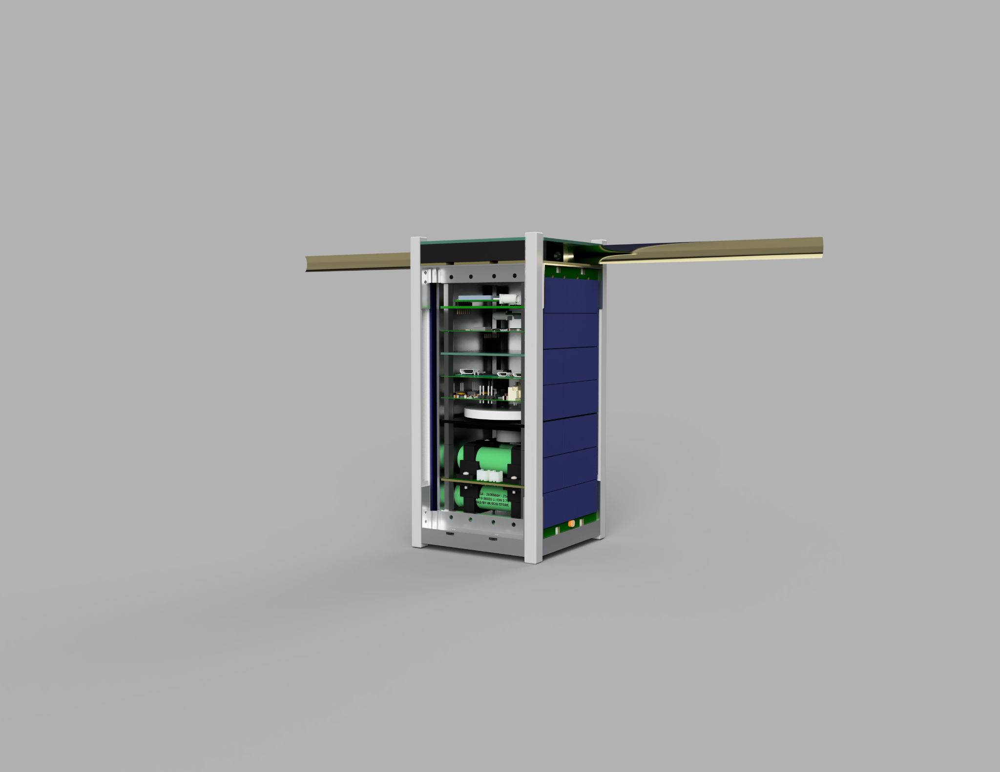
Fig. 1 · CAD assembly
2U
10 × 10 × 22.7 cm
500km
design LEO altitude
1090MHz
ADS-B from aircraft
433MHz
LoRa TT&C, half-duplex
OPENConsolidated mass budget + final measured mass · total and per-subsystem cost (COTS vs custom).
2Payload · ADS-B receiverpatch → RTL-SDR V3 → RPi Zero W → USART3 → OBC
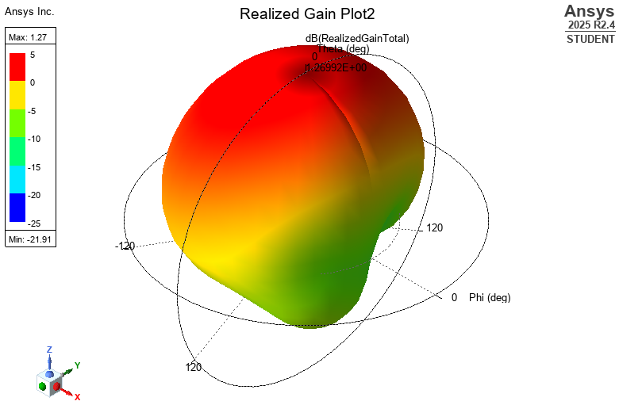
Fig. 27 · HFSS realized gain, peak 1.27 dBi
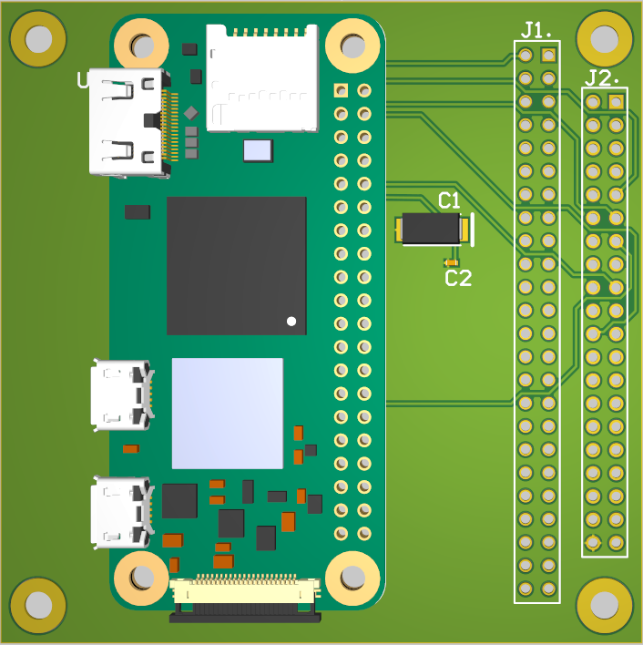
Fig. 23 · PLD interface PCB
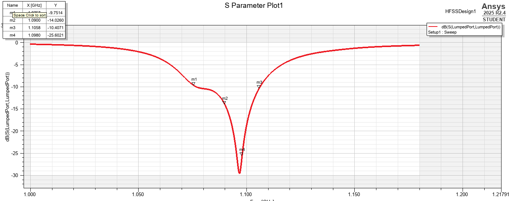
Fig. 25 · S11 −14.03 dB @ 1.09 GHz
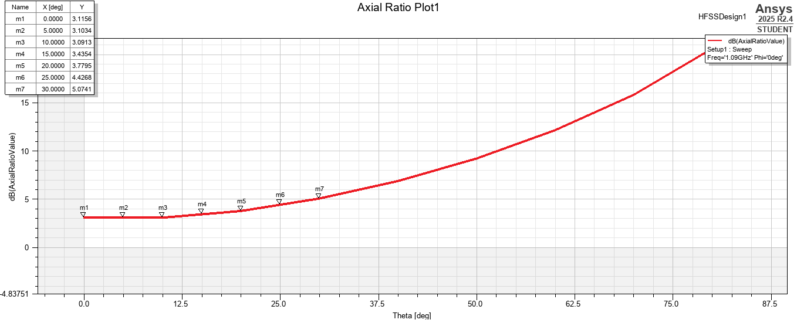
Fig. 26 · axial ratio < 5.07 dB within ±30°
- Corner-truncated patch on the nadir face, near-circular polarization: directivity 6.27 dBi, efficiency 32.9 %ANALYSIS
- dump1090-based C on RPi Zero W: 2.0 MS/s I/Q, 8 µs preamble match, CRC-24 with 1-bit correction, DF17/18
- Frames timestamped (1 ms) and sent raw; ground pairs CPR odd/even frames
| Aircraft → sat, worst case 30° | dB |
|---|---|
| Pt (≈125 W) · Gtx · Grx | 51 · 2 · 1.27 |
| FSPL · pol. · other | −148.75 · −6.25 · −8.14 |
| Received / sensitivity | −105.5 / −133 dBm |
| Margin, Table 14ANALYSIS | 27.5 dB |
OPENVerify sensitivity and trajectory / origin–destination processing with known data · logs from the physical reception + downlink chain and the 20-aircraft / 600 s test. The secondary payload (anomaly detection) is a concept only.
3TT&C · LoRa linkESP32 + E32-433T20D · 20 dBm · RDT 3.0
On-board dipole, 2 × λ/4 at 180°: ideal E-plane (toroidal, linear pol.)
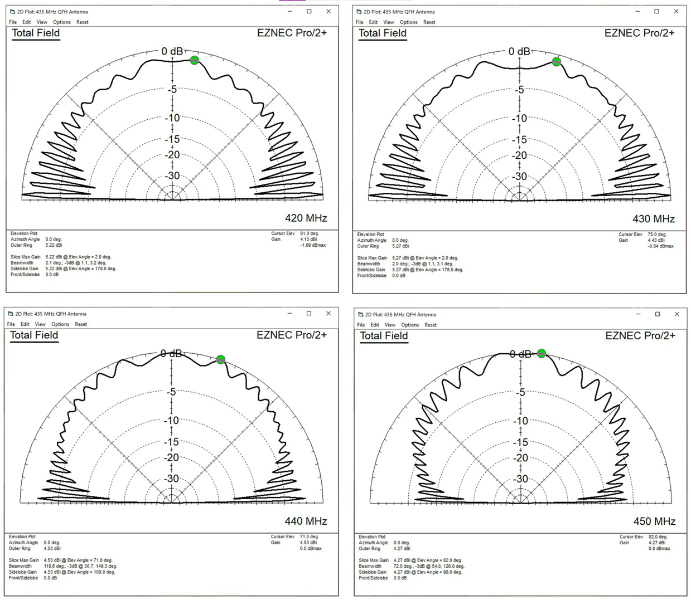
Fig. 18 · ground QFH 435 MHz, circular pol., ~5 dBPROTOTYPE
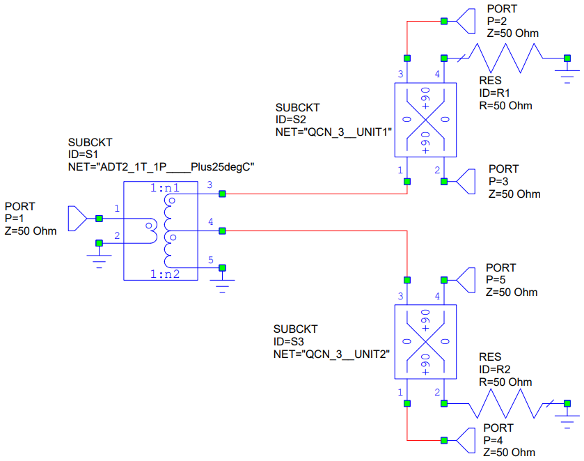
Fig. 14 · phase shifter: ADT2-1T+ balun + 2 × QCN-3+
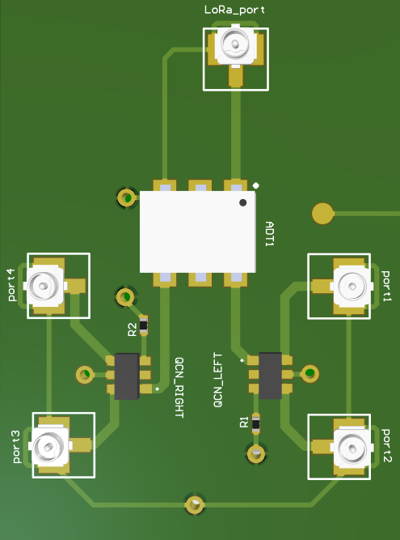
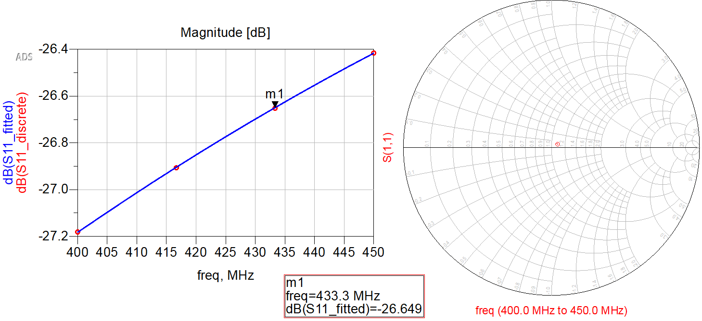
Fig. 16–17 · RF board, 50 Ω line S11 −26.6 dB @ 433 MHz
| Link budget | down = up |
|---|---|
| Pt | 20 dBm |
| Antenna gains | 5.27 + 2.15 dBi |
| FSPL | −140.74 dB |
| Polarization · other | −3 · −4.78 dB |
| Received | −121.1 dBm |
| E32 sensitivity | −146 dBm |
| Margin ANALYSIS | 24.9 dB |
Table 3
Packets: 32-bit words with a 7-bit prefix (4-bit subsystem + 3-bit type) and metadata-scaled integers; 112-bit ADS-B frames are chunked. ESP32: one core for the bus, one for the radio.
OPENExecuted TC and decoded TM with the real ground station · consolidated mission data volume, storage and useful downlink capacity.
4EPS · power budget
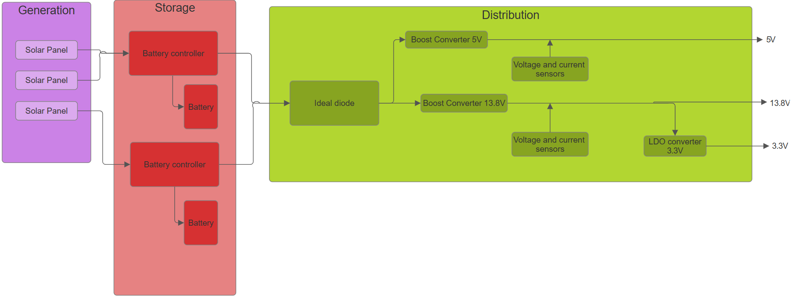
Fig. 21 · 3 panels → 2 × MP2733 MPPT → LTC4358 ideal diode → LM2735X boost 5 / 13.8 V → LD1117 3.3 V
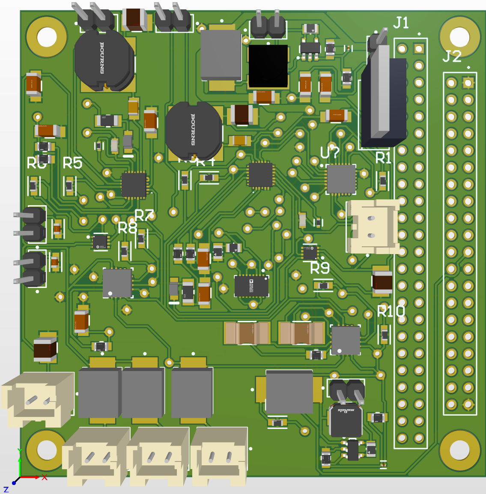
Fig. 22 · EPS PCB
2 × 18650-Q30 (3000 mAh, 3.6 V) · MAX17048 SoC · INA3221 sensing · daily mean 3.68 W (Table 12)ANALYSIS
OPENPeak ADCS demand (ESCON 24/2, 22.99 W on 13.8 V) vs real bus capability · measured charging current under light.
5ADCS · 1-axis prototype
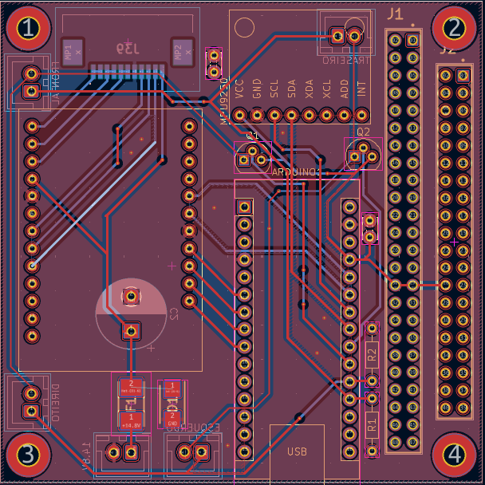
Fig. 9 · ADCS PCB
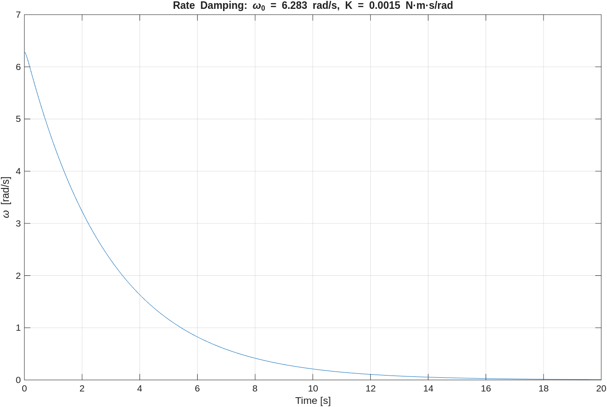
Fig. 4 · rate damping from 60 RPMANALYSIS
- Wheel: Maxon EC 20 flat + ESCON 24/2, 3.2 mN·m (≈1.2× margin)
- MPU-9250 + 4 LDRs → complementary filter, 10 Hz, Arduino Nano
- Req.: 60 → 5 RPM in 10 s · azimuth < 5° · GM 6 dB · PM 45°
OPENQuantify prototype damping + final assembly configuration · LDR angular error vs light source.
6OBC · flight software
- FreeRTOS: 8 prioritized tasks driven by events, one per state + Manager, Housekeeping, Receive, Error
- ConOps (Fig. 31): detumble, deploy, azimuth by TC
- BIT_MECHANICS lock: no Deploy + Detumbling at once
OPENConsolidated implementation / integration status of flight and ground software.
7Structure · radiation · thermal
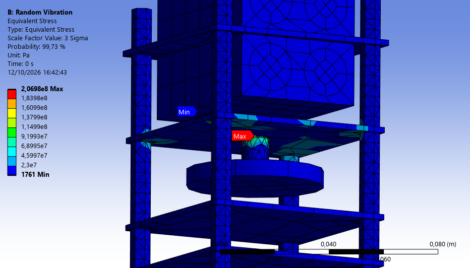
Fig. 42 · vib. Z
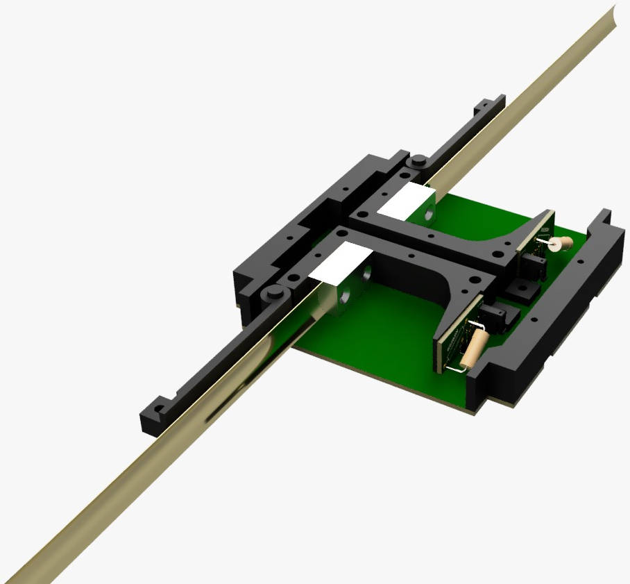
Fig. 60 · deployer
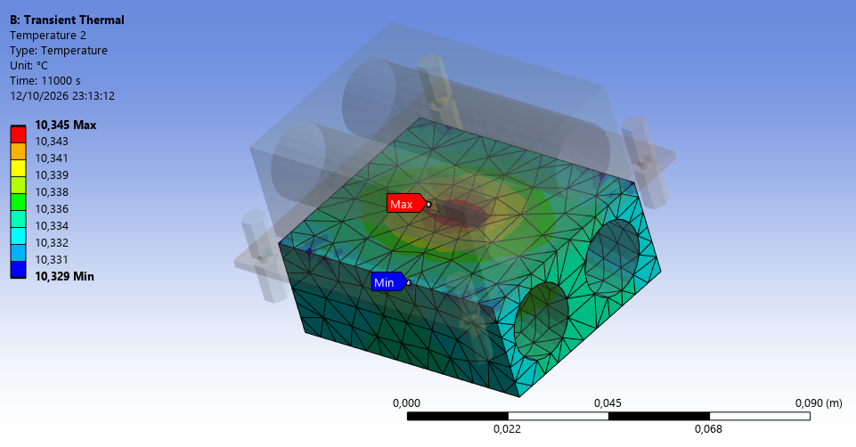
Fig. 70 · thermal
- Al 7075, 14.1 gRMS: 3σ 206.8 MPa (Z) → FS 2.44 · Y 4.01 · X 2.74ANALYSIS
- Deployer: steel tape-spring, Dyneema burn-wire
- Shield 3 mm HDPE + 2 mm Ti: TID < 100 rad / 4 yr
- Heater (LQI): Al ≥ 10 °C, 0.145 Wh/cycle, 0.48 W peak
OPENFit-check + retention (FEM alone is not readiness) · thermal monitoring vs model · release ≥ 10 cm.
At UNSAM
8 tests
ready per review
Detumbling
60 → 5 RPM
in 10 s
Light azimuth
< 5° error
LDR pointing
TC / TM
24.9 dB
link margin
ADS-B mission
20 aircraft
within 600 s
Deployment
≥ 10 cm
remote release
Charging
MPPT
under light
Thermal
Al ≥ 10 °C
LQI heater
Vibration
14.1 gRMS
min. FS 2.44